Spatial statistics for labelled spots
Last compiled: 21 March 2023
spatial_statistics_for_labelled_spots.RmdIn this tutorial, we will continue to analyze the spatial relationships in Visium data, specifically describing how spots that have been clustered, i.e. labelled, are organized. We will take advantage of a few methods from graph theory to describe 1) if a cluster displays an aggregated or dispersed spatial pattern using an assortativity test, and 2) if two clusters co-localize spatially by calculating neighborhood enrichment.
library(semla)
library(tibble)
library(dplyr)
library(ggsci)
library(ggplot2)
library(patchwork)
library(DT)Demo data
For this tutorial we will use a data set from mouse kidney, available for download from 10x Genomics. This tissue section has an interesting organization to it, which we might want to be able to describe in a more statistical fashion.
After loading the data, we will quickly process the data and generate
clusters using Seurat’s FindNeighbors() and
FindClusters() based on PCA.
# Set up folders for storing data
tmpdir <- "." # Set current wd or change to tmpdir()
dir.create(paste0(tmpdir, "/demo_data"))
dir.create(paste0(tmpdir, "/demo_data/kidney"))
targetdir <- paste0(tmpdir, "/demo_data/kidney/visium")
dir.create(targetdir)
# Download data
download.file(url = "https://cf.10xgenomics.com/samples/spatial-exp/1.1.0/V1_Mouse_Kidney/V1_Mouse_Kidney_filtered_feature_bc_matrix.h5",
destfile = file.path(targetdir, "filtered_feature_bc_matrix.h5"))
download.file(url = "https://cf.10xgenomics.com/samples/spatial-exp/1.1.0/V1_Mouse_Kidney/V1_Mouse_Kidney_spatial.tar.gz",
destfile = file.path(targetdir, "spatial.tar.gz"))
untar(tarfile = file.path(targetdir, "spatial.tar.gz"),
exdir = file.path(targetdir))
file.remove(file.path(targetdir, "spatial.tar.gz"))
# Read data
samples <- file.path(targetdir, "filtered_feature_bc_matrix.h5")
imgs <- file.path(targetdir, "spatial", "tissue_hires_image.png")
spotfiles <- file.path(targetdir, "spatial", "tissue_positions_list.csv")
json <- file.path(targetdir, "spatial", "scalefactors_json.json")
infoTable <- tibble::tibble(samples, imgs, spotfiles, json)
se <- ReadVisiumData(infoTable)## ## ── Reading 10x Visium data ──## ## ℹ Loading matrices:## → Finished loading expression matrix 1## ℹ only 1 expression matrix loaded.## ✔ There are 32285 features and 1438 spots in the matrix.## ℹ Loading coordinates:## → Finished loading coordinates for sample 1## ℹ Collected coordinates for 1438 spots.## ## ── Creating `Seurat` object## ✔ Expression matrices and coordinates are compatible## ℹ Created `Seurat` object## ℹ Created `Staffli` object## ✔ Returning a `Seurat` object with 32285 features and 1438 spots
# Generate clusters
se <- se |>
NormalizeData() |>
ScaleData() |>
FindVariableFeatures() |>
RunPCA(verbose = F) |>
FindNeighbors(reduction = "pca", dims = 1:30) |>
FindClusters()## Centering and scaling data matrix## Computing nearest neighbor graph## Computing SNN## Modularity Optimizer version 1.3.0 by Ludo Waltman and Nees Jan van Eck
##
## Number of nodes: 1438
## Number of edges: 48160
##
## Running Louvain algorithm...
## Maximum modularity in 10 random starts: 0.7913
## Number of communities: 11
## Elapsed time: 0 seconds
unique_clusters <- levels(se$seurat_clusters)
cluster_colors <- setNames(ggsci::pal_d3("category20")(length(unique_clusters)), nm = unique_clusters)
MapLabelsSummary(se,
column_name = "seurat_clusters",
bar_display = "count",
pt_size = 2,
override_plot_dims = T,
bar_label_size = 2.5,
colors = cluster_colors)
Looking at the clusters we just generated we can see that many of
them seem to follow some kind of spatial pattern. Cluster 1 is
dominating in the center of the tissue section, forming a core (the
medulla), while for instance clusters 0, 2, 3 are intermingled in the
cortical area of the section. To describe how these spatial clusters
behave and relate to each other, we can use a couple of analyses within
semla called RunLabelAssortativityTest() and
RunNeighborhoodEnrichmentTest().
Visium data as a network
The spots in spatial data can be viewed as a network, by connecting each spot to its closest neighbors. In Visium, the spots form hexagonal patterns, and thus each spot can be connected to a maximum of six neighboring spots, if we only look at the area in its direct vicinity. In network science, a spot is referred to as a node, the connection between nodes are called edges, and the number of edges a node has to other nodes is described as that node’s degree (k).
We can create a network from the Visium data by using the function
GetSpatialNetwork(). This function returns a list (one
table per sample), so we’ll need to fetch the first item of the list.
Then we can add information about clusters before plotting it with
ggplot2.
spatial_network <- GetSpatialNetwork(se)[[1]]
se$random_clusters <- se$seurat_clusters |> as.character() |> sample(ncol(se))
spatial_network$cluster <- se[[]][spatial_network$from, "seurat_clusters", drop = TRUE] |> as.character()
spatial_network$random_clusters <- se[[]][spatial_network$from, "random_clusters", drop = TRUE] |> as.character()
head(spatial_network, 4)## # A tibble: 4 × 10
## from to dista…¹ nn x_start y_start x_end y_end cluster rando…²
## <chr> <chr> <dbl> <int> <int> <int> <int> <int> <chr> <chr>
## 1 AAACCGTTCGTCC… AACT… 138. 6 4116 7307 4047 7426 2 2
## 2 AAACCTAAGCAGC… CAGG… 137. 6 6932 8873 7069 8874 5 4
## 3 AAACGAGACGGTT… AAGA… 137 6 6669 5280 6532 5280 6 0
## 4 AAACGGTTGCGAA… ATCT… 137 6 5279 9107 5142 9107 3 8
## # … with abbreviated variable names ¹distance, ²random_clusters
ggplot(spatial_network, aes(x = x_start, xend = x_end, y = y_start, yend = y_end, color=cluster)) +
geom_segment() +
geom_point() +
scale_color_manual(values = cluster_colors) +
labs(title="Spatial network") +
scale_y_reverse() +
theme_void() +
theme(aspect.ratio = 1, plot.title = element_text(hjust=0.5))Label Assortativity Analysis
The term assortativity is used within network science to describe how nodes of similar properties are connected to each other. Traditionally this is looked at in terms of the node’s degree and computing a correlation coefficient between nodes of similar degrees. A few methods to look at this is Newman’s Assortativity (Newman, 2002) and Ripley’s Function (Ripley, 1976).
Inspired by this, we have developed a simple method to measure the connectivity of spots belonging to the same cluster, i.e. sharing the same label, by measuring the network’s average degree, ⟨k⟩, for each label and comparing this to a completely randomly dispersed pattern. The randomly distributed pattern can be viewed as the baseline, since we rarely obtain a pattern more dispersed than that, while a group of spots that is fully connected with each other is the highest order of organization we can achieve. In this method, each label’s ⟨k⟩ is therefore min-max scaled between the ⟨k⟩ of a randomized network (min) and the ⟨k⟩ of the fully connected network (max).
Kidney data assortativity
We run the analysis by calling the function
RunLabelAssortativityTest() and storing the results in a
new object.
res_lat <- RunLabelAssortativityTest(se, column_name = "seurat_clusters")## ## ── Running Label Assortativity Test ──## ## ℹ Generating neighborhood adjacency data from observed labels in column 'seurat_clusters'## ✔ Observed label average degree calculations complete## ℹ Generating neighborhood adjacency data from randomized labels## ✔ Randomized label adjacency calculations complete from 100 iterations## ! The standard deviation of some of the permuted results is relatively high (>0.1) which may indicate unreliable results.
## A possible solution could be to increase the number of permutations ('n_permutations').## ✔ Scores calculated for each label and returned as output tibbleThe output from this analysis is tibble containing a scaled average
degree, avg_k_scaled, for each unique label provided for
the analysis. We can also read out the intermediates from the analyses
which were used for the calculations of the final score. The
avg_k_scaled goes from ~0-1, with values around 0 being
equal to a randomly dispersed spatial pattern and values closer to 1
indicating an aggregated and highly connected organization of the spots
of that label.
Let’s have a look at the results!
datatable(
res_lat |> arrange(desc(avg_k_scaled)),
rownames = F,
caption = "Label assortativity results"
)
ggplot(res_lat, aes(x=reorder(label, avg_k_scaled), y=avg_k_scaled)) +
geom_col(width = 0.8) +
geom_hline(yintercept = 0, color="black", size=0.2) +
labs(x="Label", y="Scaled average degree", title="Label assortativity score") +
coord_flip() +
theme_linedraw() +
theme(plot.title = element_text(hjust=0.5, size=12, face = "bold"),
axis.text = element_text(size=10),
legend.position = "none",
legend.title = element_text(size=10),
legend.text = element_text(size=10))## Warning: Using `size` aesthetic for lines was deprecated in ggplot2 3.4.0.
## ℹ Please use `linewidth` instead.
Not surprisingly, we see cluster 1 being clearly in the top as the most connected cluster. In the bottom we find cluster 7, which even has a slightly negative score (though it falls within the standard deviation of the randomized network, look below for more details).
We can take a closer look at cluster 1 and how it compares against its randomly dispersed counterpart to further prove the point. Here we can clearly see why this cluster’s network has a higher average degree than that of the random network.
p1 <- ggplot(spatial_network, aes(x = x_start, xend = x_end, y = y_start, yend = y_end)) +
geom_segment(color="grey90") +
geom_point(data = subset(spatial_network, cluster == "1"), color = cluster_colors["1"]) +
labs(title="Cluster 1",
caption = paste0("Observed avg k: ", round(subset(res_lat, label=="1")[,"avg_k"], 2))
)
p2 <- ggplot(spatial_network, aes(x = x_start, xend = x_end, y = y_start, yend = y_end)) +
geom_segment(color="grey90") +
geom_point(data = subset(spatial_network, random_clusters == "1"), color = cluster_colors["1"]) +
labs(title="Cluster 1 randomly dispersed",
caption = paste0("Random mean avg k: ", round(subset(res_lat, label=="1")[,"min_avg_k_mean"], 2))
)
(p1 | p2) & scale_y_reverse() & theme_void() & theme(aspect.ratio = 1, plot.title = element_text(hjust=0.5), plot.caption = element_text(hjust=0.5))Cluster 7 on the other hand had a score corresponding to a completely random spatial pattern. Looking at the spatial distribution of the spots belonging to that label we can understand why that is the case, but we can also see that this method does not describe everything about the spatial patterns as we see a trend of cluster 7 spots being localized to the outer rim of the section.
p1 <- ggplot(spatial_network, aes(x = x_start, xend = x_end, y = y_start, yend = y_end)) +
geom_segment(color="grey90") +
geom_point(data = subset(spatial_network, cluster == "7"), color = cluster_colors["7"]) +
labs(title="Cluster 7",
caption = paste0("Observed avg k: ", round(subset(res_lat, label=="7")[,"avg_k"], 2))
)
p2 <- ggplot(spatial_network, aes(x = x_start, xend = x_end, y = y_start, yend = y_end)) +
geom_segment(color="grey90") +
geom_point(data = subset(spatial_network, random_clusters == "7"), color = cluster_colors["7"]) +
labs(title="Cluster 7 randomly dispersed",
caption = paste0("Random mean avg k: ", round(subset(res_lat, label=="7")[,"min_avg_k_mean"], 2))
)
(p1 | p2) & scale_y_reverse() & theme_void() & theme(aspect.ratio = 1, plot.title = element_text(hjust=0.5), plot.caption = element_text(hjust=0.5))Explore parameter settings: n_permutations
By default, the number of permutations, n_permutations,
used is set to 100, however, it is recommended to try increasing this
value as it may give more robust results.
In many cases though, the number of permutation will have little effect on the outcome of this analysis. For our current data set we can study the effect of this by running a few tests and looking at how the average degree differs if using a higher number of permutations
lat_perm_test_list <- lapply(perm_test, function(n_perm){
f_time <- system.time(result <- RunLabelAssortativityTest(object = se,
column_name = "seurat_clusters",
n_permutations = n_perm,
verbose = F))
result$time_s <- f_time[3]
result$n_perm <- n_perm
result
})
lat_perm_test <- do.call(bind_rows, lat_perm_test_list)
ggplot(lat_perm_test, aes(x=n_perm, y = min_avg_k_mean)) +
geom_point(size=1) +
geom_errorbar(aes(ymin = min_avg_k_mean - min_avg_k_sd, ymax = min_avg_k_mean + min_avg_k_sd)) +
geom_line(data = lat_perm_test, mapping = aes(x=n_perm, y = avg_k), color = "orange", linewidth=0.5) +
facet_wrap(~label, scales = "free_y") +
labs(title="Effect of n_permutations on average degree in randomized network",
caption = "Black dots and error bars: average degree mean and s.d from permutations. Orange line: actual observed average degree.",
y="Average degree", x="n permutations") +
theme_bw()
mean(lat_perm_test$min_avg_k_sd)## [1] 0.1104268
Looking at these plots we can see that the number of
permutations actually have very little effect on the outcome and a
standard deviation of around 0.1 for the permuted values is not uncommon
even when using a high number of iterations. In this case and with this
particular data set, you could be confident of the results even at a
n_permutations set to 100. We can also see in this plot
that the observed avg k value for cluster 7 falls within the standard
deviation of the avg k of the permutations, and in that sense we can say
that the spatial pattern of cluster 7 spots is equal to that of a
randomized distribution.
In the previous test we also stored information about the function run time given different numbers of permutations. By not running excessive permutations we can save some time, however it is a matter of seconds.
t_plot <- lat_perm_test
t_plot <- t_plot |>
group_by(n_perm) |>
summarise(.groups = "keep", time_s= max(time_s))
ggplot(t_plot, aes(x=n_perm, y = time_s)) +
geom_line(size=.5) +
geom_point(size=2) +
labs(title="Function run time with increasing n permutations",
y="time (s)", x="n permutations") +
theme_bw()Neighborhood Enrichment Analysis
The purpose of a neighborhood enrichment analysis is to test whether the spots belonging to two different categories are localized next to each other spatially. To estimate the enrichment of their co-localization we need to compare it against random permutations of the labels, forming the null hypothesis saying that the spots of the two labels are distributed randomly and shares no connections other than that seen by chance. A z-score for each label pair is calculated as:
\(Z_{AB} = \frac{x_{AB} - µ_{AB}}{σ_{AB}}\)
where \(x_{AB}\) is the number of edges observed between spots of labels A and B, \(µ_{AB}\) is the permutation mean of the edges between A and B, and \(σ_{AB}\) is the permutation standard deviation of the edges between A and B.
Thus, a z-score of around 0 can be interpreted as a spatial label co-localization equal to that seen by chance given the number of spots within those categories, while a positive z-score indicates an over-representation of the label pair proximity and a negative z-score can be viewed as a depletion, or repellant effect, of the label pair spatially.
Kidney data neighborhood enrichment
The neighborhood enrichment analysis is run by calling the function
RunNeighborhoodEnrichmentTest() and storing the results in
a new results object.
res_net <- RunNeighborhoodEnrichmentTest(se, column_name = "seurat_clusters", n_permutations = 1000) ## ## ── Running Neighborhood Enrichment Analysis ──## ## ℹ Generating neighborhood adjacency data from observed labels in column 'seurat_clusters'## ✔ Observed label adjacency calculations complete## ℹ Generating neighborhood adjacency data from randomized labels## ✔ Randomized label adjacency calculations complete from 1000 iterations## ✔ Scores calculated for each label pair and returned as output tibbleAs output, we obtain a tibble with z-scores for each label pair.
datatable(
res_net |> arrange(desc(abs(z_score))),
rownames = F,
caption = "Neighborhood enrichment analysis output"
)The results can also be plotted in a few different ways, where the most straightforward is to look at it as a heatmap.
cluster_labels <- paste0("Label_", sort(unique(se$seurat_clusters)))
hm_plot_data <- res_net
hm_plot_data$label_1 <- factor(hm_plot_data$label_1, levels = cluster_labels)
hm_plot_data$label_2 <- factor(hm_plot_data$label_2, levels = cluster_labels)
ggplot(hm_plot_data, aes(label_1, label_2, fill= z_score)) +
geom_tile(color = "white",
lwd = 1.5,
linetype = 1) +
scale_fill_gradient2(low = "#0474BA",
mid = "grey90",
high = "#F17720") +
labs(x="", y="", title="Neighborhood enrichment", fill="Z-score") +
theme_bw() +
coord_fixed() +
theme(panel.grid.major = element_blank(),
axis.text.x = element_text(angle = 45, hjust = 1),
plot.title = element_text(hjust=0.5, size=12, face = "bold"),
axis.text = element_text(size=10),
legend.title = element_text(size=10),
legend.text = element_text(size=10))
We can also plot the top most enriched pairs as a bar chart. Since the output table contains each label pair in duplicate, we first need to remove the excessive duplicated values.
top_n_plot <- 10
plot_data <- res_net |>
mutate(across(where(is.factor), as.character)) |>
group_by(grp = paste0(pmin(label_1, label_2), "-", pmax(label_1, label_2))) |>
slice(1) |>
ungroup() |>
select(-grp)
plot_data <- rbind(
plot_data |> arrange(z_score) |> head(top_n_plot) |> filter(z_score < 0),
plot_data |> arrange(desc(z_score)) |> head(top_n_plot) |> filter(z_score > 0)
)
plot_data$direction <- ifelse(plot_data$z_score>0, "over-represented", "under-represented")
colors_direction_fill <- setNames(c("#F17720", "#0474BA"), nm = c("over-represented", "under-represented"))
ggplot(plot_data, aes(x=reorder(label_label, z_score), y=z_score, fill = direction)) +
geom_col(width = 0.6) +
labs(x="", y="Z-score", title="Top enriched label pairs", fill="Enrichment") +
scale_fill_manual(values = colors_direction_fill) +
geom_hline(yintercept = 0, color="black", size=0.5) +
coord_flip() +
theme_linedraw() +
theme(plot.title = element_text(hjust=0.5, size=12, face = "bold"),
axis.text = element_text(size=10),
panel.grid = element_blank(),
legend.position = "top",
legend.title = element_text(size=10),
legend.text = element_text(size=10))From the results we can see that spots of clusters 4 and 8 appear a lot more often next to each other than you would expect by chance, while spots of clusters 0 and 1 have a strong negative z-score and thus separated from each other spatially.
We can also plot these cluster pairs spatially to have a look if these results make sense. First, let’s look at the top two most over-represented label pairs.
p1 <- ggplot(spatial_network, aes(x = x_start, xend = x_end, y = y_start, yend = y_end)) +
geom_segment(color="grey90") +
geom_point(data = subset(spatial_network, cluster == "4"), color = cluster_colors["4"]) +
geom_point(data = subset(spatial_network, cluster == "8"), color = cluster_colors["8"]) +
labs(title="Clusters 4 and 8")
p2 <- ggplot(spatial_network, aes(x = x_start, xend = x_end, y = y_start, yend = y_end)) +
geom_segment(color="grey90") +
geom_point(data = subset(spatial_network, cluster == "3"), color = cluster_colors["3"]) +
geom_point(data = subset(spatial_network, cluster == "7"), color = cluster_colors["7"]) +
labs(title="Clusters 3 and 7")
(p1 | p2) & scale_y_reverse() & theme_void() & theme(aspect.ratio = 1, plot.title = element_text(hjust=0.5))We can see that in the case of clusters 4 and 8, all spots except one appear next to another spot of the other label, which clearly demonstrates that these two clusters really are co-localizing spatially in our tissue. Clusters 3 and 7 are also appearing very often next to one another, which makes sense given the high z-score.
Now, let’s look at the bottom two enriched label pairs instead.
p1 <- ggplot(spatial_network, aes(x = x_start, xend = x_end, y = y_start, yend = y_end)) +
geom_segment(color="grey90") +
geom_point(data = subset(spatial_network, cluster == "0"), color = cluster_colors["0"]) +
geom_point(data = subset(spatial_network, cluster == "1"), color = cluster_colors["1"]) +
labs(title="Clusters 0 and 1")
p2 <- ggplot(spatial_network, aes(x = x_start, xend = x_end, y = y_start, yend = y_end)) +
geom_segment(color="grey90") +
geom_point(data = subset(spatial_network, cluster == "1"), color = cluster_colors["1"]) +
geom_point(data = subset(spatial_network, cluster == "2"), color = cluster_colors["2"]) +
labs(title="Clusters 1 and 2")
(p1 | p2) & scale_y_reverse() & theme_void() & theme(aspect.ratio = 1, plot.title = element_text(hjust=0.5))
Seeing these two label pair examples, it is clear why they have
such negative z-scores since there is not a single instance where spots
of the different labels appear adjacent to one another.
Explore parameter settings: n_permutations
With the RunNeighborhoodEnrichmentTest() function you
have option to adjust the number of permutations used for the label
randomization. Picking a high enough value for this is crucial to the
analysis, since the standard deviation is taken into account in the
z-score calculations and will therefore influence the results. It could
be valuable to test a few different options for this and have a look at
when the results starts to stabilize and can therefore be regarded as
more robust
nea_perm_test_list <- lapply(perm_test, function(n_perm){
f_time <- system.time(result <- RunNeighborhoodEnrichmentTest(object = se,
column_name = "seurat_clusters",
n_permutations = n_perm,
verbose = F))
result$time_s <- f_time[3]
result$n_perm <- n_perm
result
})
nea_perm_test <- do.call(bind_rows, nea_perm_test_list)
ggplot(nea_perm_test, aes(x=n_perm, y = z_score, color=label_label)) +
geom_point(size=1) +
geom_line() +
scale_x_continuous(breaks = perm_test) +
labs(title="Effect of n_permutations on z-score",
caption = "Each line corresponds to the z-score of a label pair",
y="Z-score", x="n permutations") +
theme_bw() +
theme(legend.position = "none", axis.text.x = element_text(angle = 45, hjust = 1))
Here we can see that the scores are changing quite a lot with
lower numbers of permutations and start to stabilize at around
n_permutations = 200 and above. If you are unsure of how
many permutations are needed, it could be useful to run a test like this
to see how variable your data set is and if it requires you to pick a
higher number.
We can also here look at the run times of the function given increasing numbers of permutations used. This analysis runs relatively quick, so there is not much time loss for running the analysis with a large number of permutations.
t_plot <- nea_perm_test
t_plot <- t_plot |>
group_by(n_perm) |>
summarise(.groups = "keep", time_s= max(time_s))
ggplot(t_plot, aes(x=n_perm, y = time_s)) +
geom_line(size=.5) +
geom_point(size=2) +
scale_x_continuous(breaks = perm_test) +
labs(title="Function run time with increasing n permutations",
y="time (s)", x="n permutations") +
theme_bw() +
theme(axis.text.x = element_text(angle = 45, hjust = 1))Explore parameter settings: column_labels
If you for some reason would like to only include some of the
clusters in your data set you can specify this using the
column_labels argument in
RunNeighborhoodEnrichmentTest(). This will subset your data
to contain only the specified labels prior to running the analysis, and
therefore your results will end up being different as compared to
running the analysis with all labels.
cluster_selection <- c("1", "4", "6", "8")
res_net_medulla <- RunNeighborhoodEnrichmentTest(se,
column_name = "seurat_clusters",
column_labels = cluster_selection,
n_permutations = 1000)## ## ── Running Neighborhood Enrichment Analysis ──## ## ℹ Generating neighborhood adjacency data from observed labels in column 'seurat_clusters'## ℹ Analysis limited to study 4 unique labels## ✔ Observed label adjacency calculations complete## ℹ Generating neighborhood adjacency data from randomized labels## ✔ Randomized label adjacency calculations complete from 1000 iterations## ✔ Scores calculated for each label pair and returned as output tibble
datatable(
res_net_medulla |> arrange(desc(abs(z_score))),
rownames = F,
caption = "Neighborhood enrichment analysis output for label subset"
)
cluster_labels <- paste0("Label_", cluster_selection)
hm_plot_data <- res_net_medulla
hm_plot_data$label_1 <- factor(hm_plot_data$label_1, levels = cluster_labels)
hm_plot_data$label_2 <- factor(hm_plot_data$label_2, levels = cluster_labels)
ggplot(hm_plot_data, aes(label_1, label_2, fill= z_score)) +
geom_tile(color = "white",
lwd = 1.5,
linetype = 1) +
scale_fill_gradient2(low = "#0474BA",
mid = "grey90",
high = "#F17720") +
labs(x="", y="", title="Neighborhood enrichment", fill="Z-score") +
theme_bw() +
coord_fixed() +
theme(panel.grid.major = element_blank(),
axis.text.x = element_text(angle = 45, hjust = 1),
plot.title = element_text(hjust=0.5, size=12, face = "bold"),
axis.text = element_text(size=10),
legend.title = element_text(size=10),
legend.text = element_text(size=10))
ggplot(subset(spatial_network, cluster %in% cluster_selection), aes(x = x_start, xend = x_end, y = y_start, yend = y_end)) +
geom_segment(color="grey90") +
geom_point(mapping = aes(x = x_start, y = y_start, color = cluster)) +
scale_color_manual(values = cluster_colors[cluster_selection]) +
labs(title="Medulla associated clusters") &
scale_y_reverse() &
theme_void() &
theme(aspect.ratio = 1, plot.title = element_text(hjust=0.5))Now we can see that clusters 1 and 8 no longer have a positive enrichment, even if their spatial relationship is the same as when using the full data set. This is likely due to the large size of cluster 1 and that a large proportion of the total number of spots belong to this label, giving it a high likelihood of appearing next to spots of other labels when we randomly shuffle the labels.
This highlights the importance of being familiar with your data set and to be cautions of the different parameters that might influence an analysis like this, such as section size and number of spots within each label.
Package version
-
semla: 1.0.0